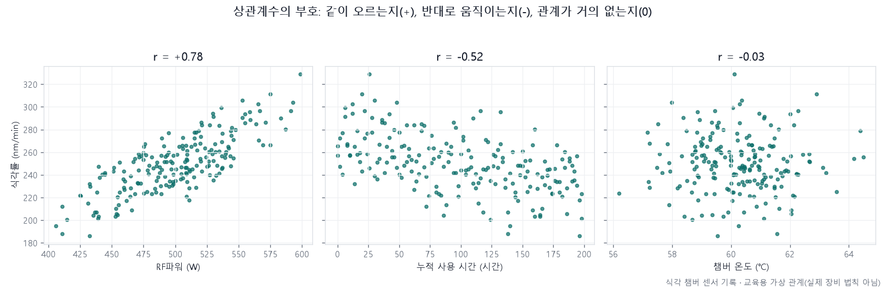
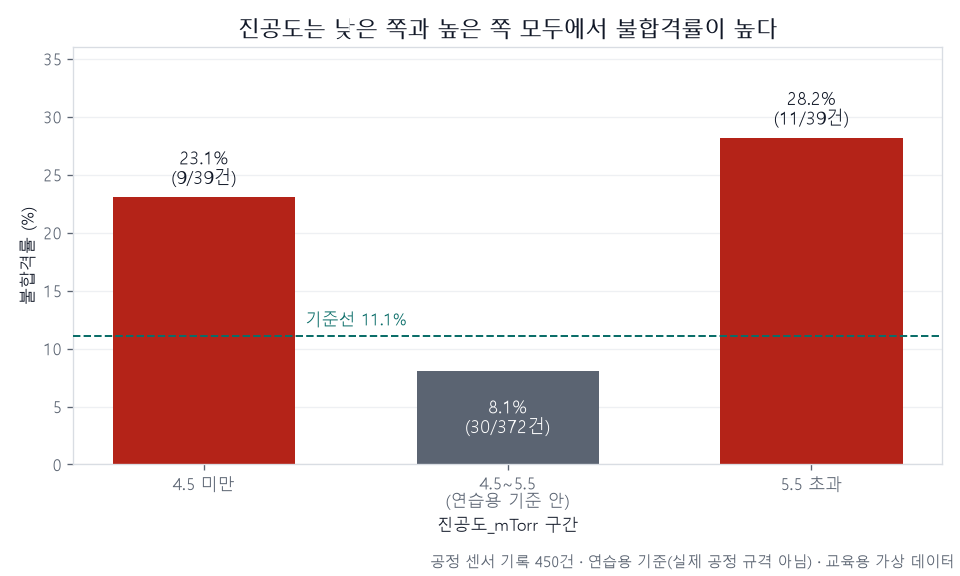

공정 이상과 원인 후보 찾기
오늘의 질문: "여러 공정 값 중 불합격과 관련 있어 보이는 것을 어떻게 찾고, 그것을 '원인'이라고 불러도 될까?"
오늘의 미션 — 입사 여덟째 날, 공정 센서 기록 450건을 받았다. 불합격과 관련 있어 보이는 공정 값을 찾아 '원인 후보' 보고서 한 줄을 쓰자. (신입 데이터 담당자의 10일 이야기와 공장·설비·데이터는 모두 교육용 가상이다.)

학습 목표
- 산점도 모양과 상관계수(-1~1)로 "함께 오른다 / 반대로 움직인다 / 곧은 띠 관계가 거의 없다"를 구분할 수 있다.
corr()로 상관계수를 구하고, 관계없는 열과 나란히 놓고 비교할 수 있다.|(또는)로 범위 밖 기록을 골라 불합격률을 기준선과 비교할 수 있다.- Orange3 Correlations로 모든 열 쌍을 줄 세워 보고, 눈에 띄는 값을 "원인"이 아니라 "원인 후보"로 말할 수 있다.
선수 지식: 7차시 — 불합격률, "원인 후보"로 말하기, Orange Pivot Table / 6차시 — 산점도(plt.scatter), Orange Scatter Plot / 4차시 — 조건 검색, 한 번 고른 표에서 한 번 더 고르기
왜 이걸 배워야 할까?
불합격이 나오면 "그때 무엇이 달랐나"를 찾아야 한다. 공정 기록에는 숫자 열이 여러 개라, 어느 값부터 볼지 정해 주는 도구가 필요하다.
오늘은 두 가지 도구를 쓴다. 두 값이 함께 움직이는 정도를 재는 상관계수, 그리고 범위 밖일 때만 문제가 되는 값을 찾는 범위 비교다.
지난 시간 복습
groupby로 구한 값과 같았다. 오늘은 "어느 설비"에서 한 걸음 더 들어가 "어떤 값이 불합격과 함께 움직이나"를 본다.PART 1 파이썬 — 함께 움직이는 값과 범위 밖 값 찾기
개념은 아이스크림 가게 기록(week08_easy_weather_sales.csv, 30행 7열, 생활 예제용 가상 데이터)으로 익힌다. 한 행 = 하루다.
| 열 | 뜻 |
|---|---|
날짜 | 기록한 날(3일 간격) |
최고기온_C | 그날 최고기온. _C = 섭씨 도(℃) |
습도_pct | 그날 습도(퍼센트). 판매·평가와 관계없게 만든 비교용 열이다 |
아이스크림판매량_count, 핫초코판매량_cup | 그날 판 아이스크림 개수(count = 센 수), 핫초코 잔 수(cup = 잔) |
냉동고온도_C | 아이스크림 냉동고 온도. 너무 차가우면 딱딱하고, 너무 따뜻하면 물러진다는 설정이다. 연습용 기준은 -20~-16℃ |
손님평가 | 그날 손님 평가. 1 = 좋음, -1 = 불만(공장 기록의 합격여부와 같은 표기) |
기준선 — 전체에서 불만인 날의 비율
"특정 조건에서 불만이 많다"고 말하려면 먼저 전체에서는 얼마나 되나를 알아야 한다. 이 비교 기준을 기준선이라고 부른다. 7차시의 불합격률 계산과 같은 모양이다.
import pandas as pd
shop = pd.read_csv("week08_easy_weather_sales.csv", encoding="utf-8-sig")
print(shop.shape)
shop.head()(30, 7)
날짜 최고기온_C 습도_pct 아이스크림판매량_count 핫초코판매량_cup 냉동고온도_C 손님평가
0 2024-03-01 7.0 62 38 78 -19.4 1
1 2024-03-04 6.3 61 12 79 -16.9 1
2 2024-03-07 15.2 61 90 61 -16.7 1
3 2024-03-10 14.4 38 59 61 -22.3 -1
4 2024-03-13 5.1 61 43 92 -19.1 1
bad_all = shop[shop["손님평가"] == -1]
base_rate = round(len(bad_all) / len(shop) * 100, 1)
print(base_rate)26.7
30일 중 불만인 날의 비율은 26.7%다. 앞으로 "냉동고 온도가 범위 밖인 날"처럼 조건을 걸었을 때 이 숫자보다 높은지를 본다.
산점도와 상관계수 — corr()
두 값을 짝지어 점을 찍은 산점도(6차시)로 모양을 먼저 본다. 그다음 corr()로 "얼마나 한 줄로 함께 움직이나"를 -1~1 사이 숫자 하나로 잰다. 이 숫자가 상관계수다.
- 부호는 방향 —
+면 한쪽이 오를 때 다른 쪽도 오르고,-면 한쪽이 오를 때 다른 쪽은 내려간다. - 크기는 세기 — 0에서 멀수록(1이나 -1에 가까울수록) 점들이 좁은 띠를 이룬다. 0에 가까우면 한 방향으로 함께 움직이는(곧은 띠) 관계가 거의 없다. 다른 모양의 관계는 아래 "범위 밖 값 찾기"에서 본다.
import matplotlib.pyplot as plt
plt.rcParams["font.family"] = "Malgun Gothic"
plt.rcParams["axes.unicode_minus"] = False
plt.scatter(shop["최고기온_C"], shop["아이스크림판매량_count"])
plt.xlabel("최고기온_C")
plt.ylabel("아이스크림판매량_count")
plt.show()
r_ice = shop["최고기온_C"].corr(shop["아이스크림판매량_count"])
print(round(r_ice, 2))
r_choco = shop["최고기온_C"].corr(shop["핫초코판매량_cup"])
print(round(r_choco, 2))(산점도: 점들이 오른쪽 위로 올라가는 좁은 띠) 0.97 -0.89
- 위 세 줄(
plt.rcParams)은 6차시와 같은 한글 글꼴 설정이다. A.corr(B)는 열 A와 열 B의 상관계수를 구한다. 노트북에서는 산점도와 두 상관계수가 각각 다른 셀에 있다.- 기온–아이스크림 0.97: 더울수록 많이 팔리는 강한 관계. 기온–핫초코 -0.89: 더울수록 덜 팔리는, 반대 방향의 강한 관계다. -0.89는 "나쁜 관계"가 아니다. 부호는 방향일 뿐 좋고 나쁨이 아니다.
| 크기(부호는 떼고 본다) | 이 과정에서 부르는 이름 | 산점도로 보면 |
|---|---|---|
| 0.7 이상 | 강함 | 좁은 띠가 뚜렷하다 |
| 0.3 ~ 0.7 | 중간 | 방향은 보이지만 퍼져 있다 |
| 0.3 미만 | 약함(곧은 띠 관계 없음) | 거의 구름 모양이다 |
경계(0.3, 0.7)는 이 과정의 연습용 기준이다. 분야마다 다르게 쓴다.
검색어 상관계수 읽는 법
데이터 분석을 처음 배우는 사람에게 상관계수(-1~1)를 읽는 법을 생활 예시로 3문장 안에 설명해줘. 부호(+, -)와 크기가 각각 무엇을 뜻하는지, 상관계수 -0.9가 '나쁜 관계'라는 뜻인지도 알려줘.관계없는 열과 나란히 비교하기
0.97이 크다는 것은 옆에 관계없는 열의 숫자를 놓아야 분명해진다. 판매와 관계없게 만든 습도로 같은 계산을 한다.
r_humid = shop["습도_pct"].corr(shop["아이스크림판매량_count"])
print(round(r_humid, 2))0.02
습도–아이스크림은 0.02로 거의 0이다. 기온 0.97과 나란히 놓으니 기온 쪽 관계가 특별하다는 것이 보인다. 공장 기록에서도 같은 방법으로 비교용 열(습도)과 나란히 본다.
범위 밖 값 찾기 — 상관계수가 놓치는 경우
냉동고는 너무 차가워도, 너무 따뜻해도 문제다. 이렇게 양쪽 끝이 다 나쁜 값은 상관계수가 0에 가깝게 나올 수 있다. 상관계수는 곧은 띠 한 방향만 재기 때문이다. 먼저 산점도로 모양을 본다.
plt.scatter~plt.show())과 같은 모양으로,
x = 냉동고온도_C, y = 손님평가 산점도를 그린다. 아래 줄(-1, 불만) 점이 어디에 몰려 있는지 본다.plt.scatter(shop["냉동고온도_C"], shop["손님평가"])
plt.xlabel("냉동고온도_C")
plt.ylabel("손님평가")
plt.show()그래서 연습용 기준(-20~-16℃) 밖인 날만 골라 불만률을 센다.
|는 "또는"이다. "-20보다 작다 또는 -16보다 크다" = 범위 밖이다. 한국어 키보드에서는 엔터 위₩키를 Shift와 함께 누른다.- 조건마다 괄호
( )로 감싼다. 괄호를 빠뜨리면 오류가 난다(아래 "주의할 점" 오류 1).
r_freezer = shop["냉동고온도_C"].corr(shop["손님평가"])
print(round(r_freezer, 2))
freezer_out = shop[(shop["냉동고온도_C"] < -20) | (shop["냉동고온도_C"] > -16)]
bad_out = freezer_out[freezer_out["손님평가"] == -1]
print(len(freezer_out), len(bad_out))
out_rate = round(len(bad_out) / len(freezer_out) * 100, 1)
print(out_rate)-0.06 8 6 75.0
- 상관계수는 -0.06, 거의 0이다. 이것만 보면 "냉동고 온도는 관계없다"고 오해하기 쉽다.
- 그런데 범위 밖인 날 8일 중 6일이 불만, 불만률 75.0%다. 기준선 26.7%보다 훨씬 높다.
8 6은 "범위 밖 날 수, 그중 불만인 날 수" 두 숫자를 한 줄에 찍은 것이다.
원인 후보로 말하기
찾은 숫자를 보고 문장으로 옮긴다. "원인이다"가 아니라 "원인 후보다"라고 쓴다. 함께 움직이는 것만으로는 원인을 확정할 수 없기 때문이다.
print(f"냉동고 온도가 범위 밖인 날 불만률은 {out_rate}%로, 기준선 {base_rate}%보다 높다. 냉동고 온도는 불만의 원인 후보다.")냉동고 온도가 범위 밖인 날 불만률은 75.0%로, 기준선 26.7%보다 높다. 냉동고 온도는 불만의 원인 후보다.
이 문장의 "높다"와 "원인 후보다"는 숫자를 보고 사람이 정한 결론을 코드에 적은 것이다. 숫자가 바뀌면 문장이 맞는지 다시 확인한다.
상관관계 ≠ 인과관계
아이스크림 판매량과 물놀이 사고는 함께 늘어난다. 하지만 아이스크림이 사고를 일으키는 것이 아니라, 둘 다 더운 날씨를 따라 늘어날 뿐이다. 이런 숨은 요인을 제3의 요인이라고 한다.
예시 일러스트레이션 · 개념도
주황 화살표가 영향의 방향이고, 빨간 점선은 "같이 움직인다"(상관관계)일 뿐이다. 가게 기록의 아이스크림과 핫초코도 서로 반대로 움직인다. 이 가상 기록은 둘 다 기온을 따라 움직이도록 만들었다. 실제 기록이라면 "핫초코가 덜 팔려서 아이스크림이 팔렸다"고 하기 전에 기온 같은 제3의 요인이 있을 수 있다고 먼저 의심해 볼 뿐이다.
- 데이터는 "왜"를 적지 않는다. 원인을 확정하려면 그 값 하나만 바꿔 보는 실험이나 설비 점검 같은 다른 근거가 필요하다.
- 그래서 데이터로는 "범위 밖일 때 불만이 많았다 → 원인 후보"까지만 말한다. 범위 안에서도 불만인 날이 있었다는 점도 다른 이유가 있을 수 있다는 신호다.
검색어 상관관계 인과관계 차이
아이스크림 판매량과 물놀이 사고가 함께 늘어나는 예로, 상관관계와 인과관계의 차이를 데이터 분석을 처음 배우는 사람에게 3문장으로 설명해줘. '제3의 요인'이 무엇인지도 알려줘.반도체 데이터로 확인하기
공정 센서 기록 week08_anomaly_root_cause.csv(450행 12열, 교육용 가상 데이터)로 같은 방법을 써 본다. 한 행 = 설비 한 대가 작업 한 번을 하며 남긴 기록이다.
위 코드에서 표 이름이 shop → df로, 열 이름만 바뀐다.
공정 지도 위치: ② 산화 ~ ⑤ 증착/이온주입 + 세정 설비의 센서 기록과, 합격 여부(공정 중간 검사 + ⑦ EDS 결과를 모은 교육용 설정)다(1차시 공정 지도 그림은 PART 2에서 다시 본다).
| 열 | 공장에서의 뜻 |
|---|---|
측정시간, 로트번호 | 언제, 어느 웨이퍼 묶음(로트)의 기록인가 |
설비번호, 공정명 | 어느 기계(EQ-01~EQ-04)에서 어떤 작업(산화·포토·식각·증착·세정)을 했나. 설비 4대가 여러 공정 기록을 함께 남겼다(교육용 가상 기록) |
온도_C, 압력_Pa | 설비 안 작업 공간(챔버, 오븐 안쪽 같은 밀폐된 방)의 온도(섭씨 도)와 압력(파스칼). 진공도_mTorr와는 다른 측정 설정으로 만든 교육용 값이라 두 열의 크기가 서로 맞지 않는다. 압력 절대값은 해석하지 않는다 |
진공도_mTorr | 챔버 안에 남은 기체의 압력. mTorr(밀리토르)는 아주 낮은 압력을 재는 단위이고, 숫자가 작을수록 공기를 더 많이 뺀 상태다 |
두께_nm | 작업 뒤 잰 웨이퍼 위 막의 두께(nm = 10억분의 1m). 공정명과 상관없이 모든 기록에 같은 열로 남긴 교육용 가상 값이다 |
진동_mm_s, 냉각수온도_C | 설비가 떨리는 정도(초당 밀리미터), 설비를 식히는 물의 온도 |
습도_pct | 클린룸 공기의 습도. 다른 값과 관계없게 만든 비교용 열이다(가게 기록의 습도와 같은 역할) |
합격여부 | 그 작업 기록에 붙여 둔 검사 결과(공정 중간 검사와 ⑦ EDS 결과를 한 열에 모은 교육용 설정). 1 = 합격, -1 = 불합격. 같은 로트가 여러 행에 나올 수 있다 |
온도 295~305℃는 이 과정의 연습용 기준이다. 실제 공정은 공정·제품마다 기준이 따로 있다. 이 범위 밖이라고 곧 불합격이라는 뜻도 아니다 — 아래에서 직접 확인한다. 온도·압력·진공도 값은 다섯 공정 모두 비슷한 크기로 만든 교육용 값이라, 실제 공정 조건(공정마다 크게 다르다)으로 해석하지 않는다.
확인 1 — 압력과 두께는 함께 움직일까
df = pd.read_csv("week08_anomaly_root_cause.csv", encoding="utf-8-sig")
print(df.shape)
r_press = df["압력_Pa"].corr(df["두께_nm"])
print(round(r_press, 2))(450, 12) 0.09
공장 말로 읽기 — 압력–두께는 0.09로 "약함"이다. 압력이 달라져도 두께가 한 방향으로 함께 움직이지 않았다. 두께와 강하게 함께 움직이는 값이 있는지는 실습지 문제 2에서 찾는다.
확인 2 — 온도가 연습용 기준 밖이면 불합격이 많을까
가게 기록의 freezer_out과 같은 모양으로, 온도 295~305℃ 밖인 기록을 골라 불합격률을 센다.
temp_out = df[(df["온도_C"] < 295) | (df["온도_C"] > 305)]
temp_out_fail = temp_out[temp_out["합격여부"] == -1]
print(len(temp_out), round(len(temp_out_fail) / len(temp_out) * 100, 1))92 9.8
92 9.8은 "범위 밖 기록 수, 불합격률(%)"이다. 노트북 6단계 마지막 셀은 4차시처럼 한 번 고른 표에서 한 번 더 골라 범위 안 기록을 센다. 결과는 358 11.5다.
공장 말로 읽기 — 온도가 연습용 기준 밖인 92건의 불합격률은 9.8%로, 참고로 본 범위 안(11.5%)보다도 낮다. 기준선과 비교해도 높지 않은지는 실습지 문제 1에서 기준선을 구한 뒤 확인한다. 범위 밖이라고 다 원인 후보가 되는 것은 아니다. 오늘의 미션은 PART 3에서 다른 값으로 같은 비교를 해서 완성한다.
실습 따라 하기
학생용 노트북을 위에서 아래로 실행한다. 1~6단계는 코드가 완성돼 있고, 4단계 첫 셀(냉동고 산점도) 하나만 직접 쓴다.
corr()로 0.97, -0.89를 얻는다. (노트북 2단계)PART 2 Orange3 — 상관 순위로 모든 쌍을 한 번에 보기
PART 1에서는 corr()로 한 쌍씩 계산했다. Orange의 Correlations(상관 순위)는 숫자 열의 모든 쌍을 한 번에 계산해 크기순으로 줄 세운다. 오늘 새 위젯은 Correlations 하나다.
Orange 말 사전
| 말 | 뜻 |
|---|---|
| 캔버스 | 위젯을 놓고 선으로 잇는 가운데 하얀 작업판 |
| 위젯 | 한 가지 일을 하는 기능 상자. 더블클릭하면 자기 창이 열린다 |
워크플로(.ows) | 캔버스에 놓은 위젯과 연결을 통째로 저장한 파일 |
.tab | Orange가 읽는 표 파일. CSV와 내용은 같고, 열마다 종류·역할이 적혀 있다 |
| 툴팁 | 마우스를 올리고 잠시 기다리면 뜨는 작은 설명 상자 |
위젯 이름표
| 위젯(화면 이름) | 어느 묶음에 있나 | 한국어 뜻 | 오늘 하는 일 |
|---|---|---|---|
File | Data | 파일 불러오기 | 표 파일을 연다. _start.ows에 이미 들어 있다 |
Correlations | Unsupervised | 상관 순위 | 오늘 새 위젯. 숫자 열의 모든 쌍의 상관계수를 구해 크기순으로 줄 세운다. 파이썬 corr()를 모든 쌍에 한 것과 같다 |
Scatter Plot | Visualize | 산점도 | 두 열로 점을 찍는다(6차시에 써 봤다). 색으로 합격·불합격을 나눠 본다 |
- 맨 위 칸에서 Pearson correlation(파이썬
corr()와 같은 계산)이 골라져 있는지 본다. 그 아래 칸은 (All combinations)(모든 쌍) 그대로 둔다. - 아래 목록 한 줄 = 열 한 쌍이다. 왼쪽 숫자가 상관계수이고(
+0.781처럼 부호와 소수 셋째 자리까지), 막대 길이가 크기다. 부호를 뗀 크기가 큰 쌍부터 위에 놓인다. - 목록 바로 위 Filter ... 칸에 열 이름 일부(예:
식각률)를 입력하면 그 열이 들어간 쌍만 남는다. - 숫자 열끼리만 계산한다. 글자·범주 열(
합격여부,설비번호,공정명)은 목록에 나오지 않는다. 시간 열측정시간은 숫자로 바꿔 계산해 목록에 들어간다.
오늘 데이터는 공정 지도의 어디일까

1차시에 본 공정 지도(교육용 단순화, 가상 데이터로 그린 그림). ②~⑥은 층을 쌓을 때마다 여러 번 되풀이한다.
- 워밍업
week08_orange_chamber_sensor.csv— 공정 지도 위치: ④ 식각 챔버 안 센서 기록. ④ 식각은 필요 없는 부분을 깎아 내는 단계다(조각칼로 파내기). - 반도체
week08_anomaly_root_cause.csv— 공정 지도 위치: ②~⑤ + 세정 설비 센서 기록과 합격 여부(공정 중간 검사 + ⑦ EDS 결과를 모은 교육용 설정). PART 1에서 본 그 기록이다.
워밍업 — 식각 챔버 센서 기록
식각 설비는 웨이퍼를 챔버에 넣고 가스를 흘려 넣은 뒤, 고주파 전기(RF파워)로 가스를 반응하기 쉬운 상태(플라즈마)로 만들어 표면을 깎는다(건식 식각의 한 방식).
week08_orange_chamber_sensor.csv(200행 7열, 교육용 가상 데이터)는 식각 챔버 한 대가 2시간마다 남긴 센서 기록이다.
| 열 | 뜻 |
|---|---|
측정시간 | 기록 시각(2시간 간격) |
RF파워_W | 챔버에 거는 고주파 전기의 세기. W = 와트 |
챔버압력_mTorr | 챔버 안 압력(밀리토르). 공정 기록의 압력_Pa·진공도_mTorr와는 다른 데이터의 교육용 값이라 서로 크기를 비교하지 않는다 |
가스유량_sccm | 식각 가스가 흘러 들어가는 양. sccm은 분당 흘러 들어가는 가스 양을 재는 단위 |
누적사용시간_hr | 마지막 세정 뒤 챔버를 쓴 시간. hr = 시간(hour). 0~200hr 사이를 오르다 세정하면 다시 0이 된다(톱니 모양) |
챔버온도_C | 챔버 벽 온도(섭씨 도) |
식각률_nm_min | 분당 깎이는 두께(nm/min). 클수록 빨리 깎인다 |
이 데이터는 열 사이 관계를 교육용으로 정해 만든 교육용 가상 관계다. 실제 장비에서 늘 이렇다는 뜻으로 읽지 않는다. 어떤 쌍이 함께 움직이는지는 Orange가 모든 쌍을 계산해 줄 세워 준다.
워크플로 열기
- Orange3에서 File → Open을 누르고
week08_1_chamber_start.ows를 연다. - 캔버스에 File 위젯 하나와 ①~③ 안내 메모가 보이면 준비가 끝난 것이다. File을 더블클릭해 200행이 들어왔는지 본다. 막히면 같은 폴더의
week08_1_chamber_done.ows(완성본)를 연다.

Correlations를 끌어 와 File과 잇고 더블클릭한다.
위쪽 칸이 Pearson correlation인지 본다. 맨 위 쌍과, 부호가 -인 쌍 중 가장 위에 있는 쌍을 찾는다.

식각률과 RF파워(r = +0.78, 함께 오름), 누적 사용 시간(r = -0.52, 반대로 움직임), 챔버 온도(r = -0.03, 곧은 띠 관계가 거의 없음). 교육용 가상 관계이며 실제 장비의 물리 법칙이 아니다(가상 데이터로 그린 그림).
3위 +0.500 누적사용시간_hr–측정시간은 왜 나왔을까? 누적사용시간은 시간이 흐르면 쌓이고, 세정하면 0으로 돌아간다. 이 기록(약 17일)에는 세정이 한 번뿐이라 두 구간 모두에서 시각과 함께 올랐고, 리셋 때문에 1이 아니라 +0.5 정도로 잡혔다. 세정이 여러 번 있는 긴 기록이면 이 값은 0에 가까워진다. 측정시간이 목록에 들어가서 생긴 쌍이라, 식각률 이야기와는 따로 읽는다.
Scatter Plot을 File과 잇고 더블클릭한다. Axis x = RF파워_W, Axis y = 식각률_nm_min으로 고른다(처음에는 Axis y가 다른 열로 골라져 있을 수 있다).
점들이 오른쪽 위로 올라가는 띠를 이룬다. 1위 쌍의 숫자가 그림으로는 이런 모양이다. 워밍업 데이터에는 합격·불합격 같은 결과 열이 없어서 점에 색이 없다.
-면 한쪽이 오를 때 다른 쪽은 내려간다.
이 데이터에서 RF파워는 식각률이 달라지는 원인 후보가 된다(+0.781). 그래도 함께 움직인다는 것만으로 원인이라고 확정하지는 않는다 — 게다가 이 관계는 교육용으로 정한 가상 관계다.
반도체 — 공정 센서 기록을 Orange로 보기
강사가 File → Open으로 week08_2_anomaly_start.ows를 연다. File에는 PART 1의 공정 센서 기록 450행이 들어 있다. 캔버스 메모 ②는 학생이 실습지 문제 4에서 하고, ③④는 지금 강사 화면에서 본다.
Scatter Plot을 잇고 Axis x = 온도_C, Axis y = 두께_nm, Color = 합격여부로 고른다(새로 이으면 처음에는 x 설비번호 · y 공정명으로 뜬다. Color는 처음부터 합격여부다).
읽을 것 — 점들은 오른쪽 위로 올라가는 띠를 이룬다. 온도와 두께는 함께 움직인다. 그런데 빨간 점(불합격, -1)은 띠의 한쪽 끝에 몰리지 않고 띠 전체에 흩어져 있다. PART 1 확인 2(온도 범위 밖 9.8%, 안 11.5%)와 같은 이야기다. 온도는 두께와 함께 움직이지만, 불합격과는 뚜렷하게 함께 움직이지 않는다.
합격여부)이 있어야 켜진다. 워밍업 데이터에서는 버튼이 꺼져 있다.
볼 것 — 위쪽 추천 짝에 어떤 열이 자주 나오는지 메모해 둔다. 이것은 "먼저 살펴볼 곳"을 알려 주는 단서일 뿐이고, 정말 불합격과 관련 있어 보이는지는 PART 3에서 숫자로 확인한다.
습도_pct는 다른 값과 관계없게 만든 비교용 열이다. 짝으로 함께 그려졌을 뿐이라 원인 후보로 올리지 않는다.파이썬 결과와 비교
| 파이썬 | Orange | |
|---|---|---|
| 상관계수 | corr()로 한 쌍씩 구한다 | Correlations가 숫자 열의 모든 쌍을 한 번에 구해 줄 세운다 |
| 합격여부 | 1/-1 숫자라 계산에 넣을 수 있다 | 결과(범주) 열이라 Correlations 목록에 없다 — 불합격과의 관계는 이 목록에 처음부터 나오지 않는다 |
| 범위 밖일 때만 문제가 되는 값 | 범위 밖 기록을 골라 불합격률을 기준선과 비교한다(가게 기록의 냉동고처럼) | 상관 순위에는 잘 안 보인다. Scatter Plot 색이나 Find Informative Projections로 단서를 본다 |
한 문장으로 — Correlations의 숫자는 파이썬 corr()와 같은 계산이다(실습지 문제 4에서 직접 맞춰 본다). 다만 가게 기록의 냉동고 온도처럼 "범위 밖일 때만" 문제가 되는 값은 상관 순위에 잘 드러나지 않고, Correlations 목록에는 합격여부도 없다. 그래서 범위 비교를 함께 쓴다.
PART 3 실습지
8차시 실습지를 열고 순서대로 푼다.
- 문제 1~3 (파이썬) — 노트북 7단계. 불합격 기준선을 구하고, 온도–두께와 습도–두께 상관계수를 비교하고, 진공도가 연습용 기준(4.5~5.5 mTorr) 밖일 때 불합격률을 구한다. 문제 2의 두 번째 셀은 빈칸 없이 직접 쓴다. 문제 3은 숫자 두 개(범위 밖 불합격률, 기준선)만 출력한다 — 높은지 낮은지는 내가 판단한다.
- 문제 4 (Orange) —
week08_2_anomaly_start.ows에 Correlations를 잇고 1위 쌍과 값을 읽어 문제 2와 비교한다. Filter로 진공도 쌍도 찾아본다. - 문제 5 (해석 문장) — 문제 1·3의 숫자로 진공도가 불합격의 원인 후보인지 판단해 한 문장으로 쓰고, 원인이라 말하려면 더 필요한 것을 쓴다.
다 풀면 실습지의 "정답 보기"로 확인하고, 문제 5의 문장을 옆 사람에게 읽어 준다.
진공도 4.5~5.5 mTorr도 이 과정의 연습용 기준이다. 실제 공정은 공정·제품마다 기준이 따로 있고, 범위 밖이라고 곧 불합격이라는 뜻도 아니다.
검색어 반도체 공정 진공 이유
반도체를 처음 배우는 사람에게 식각·증착 같은 반도체 공정에서 설비 안을 진공에 가깝게 만드는 이유를 쉬운 말로 3문장 안에 설명해줘. 진공도를 mTorr로 잴 때 숫자가 작을수록 무슨 뜻인지도 알려줘.검색어 원인 후보 확인하는 방법
공장 데이터에서 '진공도가 정해 둔 범위를 벗어난 기록에 불합격이 많다'는 것을 찾았어. 이것만으로 진공도가 불합격의 원인이라고 단정할 수 없는 이유와, 원인 후보를 더 확인하려면 무엇을 해 볼 수 있는지 데이터 분석을 처음 배우는 사람에게 3가지로 설명해줘.핵심 용어 카드
상관계수
- 한 줄 설명
- 두 값이 한 줄로 함께 움직이는 정도를 -1~1 숫자 하나로 나타낸 것. 부호는 방향, 크기는 세기.
- 쉬운 비유
- 두 사람이 얼마나 발맞춰 걷는지 매긴 점수. 반대 방향으로 딱 맞춰 걸어도 점수(크기)는 높다.
- 데이터에서의 예
- 기온–아이스크림
0.97, 기온–핫초코-0.89, 습도–아이스크림0.02 - 자주 하는 오해
- -0.89를 "나쁜 관계"로 읽는다. 부호는 방향일 뿐이다.
기준선
- 한 줄 설명
- 조건을 걸기 전, 전체에서의 비율. "특정 조건에서 더 높은가?"를 이 숫자와 비교한다.
- 쉬운 비유
- 평소 체온. 열이 났는지는 평소와 비교해야 안다.
- 데이터에서의 예
- 가게 불만률 26.7% → 냉동고 범위 밖인 날 75.0%
- 자주 하는 오해
- 조건을 건 비율 하나만 보고 높다고 말한다. 기준선이 없으면 높은지 낮은지 모른다.
원인 후보
- 한 줄 설명
- 데이터에서 결과와 함께 움직여 먼저 살펴볼 값. 원인으로 확정하려면 다른 근거가 더 필요하다.
- 쉬운 비유
- 현장 근처에 있던 용의자. 범인으로 확정된 사람이 아니다.
- 데이터에서의 예
- 냉동고 온도(범위 밖 불만률 75.0% vs 기준선 26.7%)
- 자주 하는 오해
- "원인 후보"를 붙이면 아무 값이나 후보가 된다고 생각한다. 근거 숫자와 "무엇의 후보인지"(두께인지 불합격인지)를 함께 말한다.
진공도
- 한 줄 설명
- 챔버 안에 남은 기체의 압력. 숫자가 작을수록 공기를 더 많이 뺀 상태다.
- 쉬운 비유
- 진공 포장 용기 안에 공기가 얼마나 남았나.
- 데이터에서의 예
진공도_mTorr, 연습용 기준 4.5~5.5- 자주 하는 오해
- 진공도 숫자가 클수록 진공이 "강하다"고 생각한다. 반대로 숫자가 작을수록 진공에 가깝다.
데이터
week08_easy_weather_sales.csv— 30행 7열, 생활 예제용 가상 데이터(PART 1). 아이스크림 가게 30일 기록.week08_orange_chamber_sensor.csv— 200행 7열, 교육용 가상 데이터(PART 2 워밍업, Orange는orange/폴더의.tab을 연다). 열 사이 관계는 교육용 가상 관계다. 공정 지도 위치: ④ 식각 챔버 안 센서 기록.week08_anomaly_root_cause.csv— 450행 12열, 교육용 가상 데이터(PART 1·2·3). 설비 4대(EQ-01~EQ-04)가 여러 공정 기록을 함께 남겼다(교육용 가상 기록). 공정 지도 위치: ②~⑤ + 세정 설비의 센서 기록과 합격 여부(공정 중간 검사 + ⑦ EDS 결과를 모은 교육용 설정).- 열 설명: 데이터 설명서
주의할 점 & 자주 발생하는 오류
df[df["진공도_mTorr"] < 4.5 | df["진공도_mTorr"] > 5.5] →
TypeError: Cannot perform 'ror_' with a dtyped [float64] array and scalar of type [bool].
|가 비교보다 먼저 계산돼서 생긴다. 조건마다 ( )로 감싼다. | 대신 or를 써도 ValueError: The truth value of a Series is ambiguous.로 시작하는 오류가 난다.
| 대신 &(그리고)를 쓰면 오류 없이 0건이 골라지고, 다음 셀에서 ZeroDivisionError: division by zero가 난다. 4.5보다 작으면서 5.5보다 큰 값은 없기 때문이다.
df["설비번호"].corr(df["두께_nm"]) →
ValueError: could not convert string to float: 'EQ-02'. corr()는 숫자 열끼리만 계산한다. EQ-02 같은 글자는 숫자로 바꿀 수 없다.
____를 채우지 않으면 NameError: name '____' is not defined,
AttributeError: 'Series' object has no attribute '____'(Series = 표의 열 하나), SyntaxError: invalid syntax. Perhaps you forgot a comma? 중 하나가 난다. 쉼표 문제가 아니라 빈칸을 아직 안 채웠다는 뜻이다.
앞 셀이 실패한 채 다음 셀을 실행하면 NameError: name 'vac_out_fail' is not defined처럼 앞 셀에서 만들 변수가 없다는 오류가 이어서 난다. 앞 셀부터 고친다.
- 문제 1에서 나누는 표를
shop(가게 기록)으로 쓰면 100%가 넘는 숫자가,== 1(합격)을 세면88.9가 나온다. - 문제 2 둘째 셀에서 힌트의
shop이 남아shop["습도_pct"].corr(df["두께_nm"])로 쓰면0.29가 나온다. 가게 기록과 공장 기록을 행 번호끼리 짝지어 계산한 엉뚱한 값이다. 두 열 모두df에서 꺼낸다. - 문제 3에서
== 1을 쓰면78 58이 나온다. 불합격이 아니라 합격을 센 것이다. 불합격률이4.4로 나오면 범위 밖 표vac_out가 아니라df로 나눈 것이다.
결과 정리 & 퀴즈
- 가게 기록: 기준선 26.7%. 기온–아이스크림 0.97, 기온–핫초코 -0.89, 습도–아이스크림 0.02.
- 냉동고 온도는 상관계수 -0.06으로 0에 가깝지만, 범위 밖인 날 불만률은 75.0%였다 → 상관계수가 놓치는 "양쪽 끝이 다 나쁜" 값은 범위로 나눠 비교한다.
- 공정 기록: 압력–두께 0.09(약함). 온도는 연습용 기준 밖 9.8%, 안 11.5%로 불합격률이 높지 않았다 → 범위 밖이라고 다 원인 후보는 아니다.
- Orange 워밍업: Correlations 1위 +0.781 RF파워–식각률, 2위 -0.516 누적사용시간–식각률(교육용 가상 관계). 반도체 Scatter Plot에서 불합격 점은 온도–두께 띠 전체에 흩어져 있었다.
- 오늘의 미션(진공도)의 숫자는 실습지 문제 1~4에서 직접 구한다(아래 "핵심 질문 → 데이터 연결"에서 확인). 비교 기준은 기준선(전체 불합격률) 하나다.
- 장비 조건과 결과 사이에서 관련 있어 보이는 값을 찾을 수 있다(오늘: 워밍업 RF파워–식각률 +0.78은 교육용 가상 관계, 공정 기록 진공도는 범위 밖 불합격률). 그래도 데이터로는 "원인 후보"까지만 말하고, 무엇의 후보인지(두께인지, 불합격인지)를 함께 말한다.
- 진공도처럼 연습용 기준을 벗어날 때만 문제가 되는 값은 상관계수에 잘 안 보인다. 범위 밖 기록의 불합격률을 기준선과 비교해야 보인다.
복습 문제 전체는 quiz.json(수업 후 자율 복습)에 있다. 아래는 그중 일부다.
-는 방향(반대로 움직임), 크기 0.89는 세기(강함)다. 좋고 나쁨이 아니다.AI로 한 걸음 더 — 질문하고 코드 받아보기
ChatGPT에 아래처럼 물어 받은 코드의 예시다. 4차시에 배운 여러 열 고르기 뒤에 corr()를 붙였다. 노트북 8단계에서 실행해 실습지 문제 2의 두 숫자를 표에서 찾아본다.
pandas 표 df에서 온도_C, 압력_Pa, 진공도_mTorr, 두께_nm, 습도_pct 다섯 열끼리의 상관계수를 한 번에 표로 보여 주는 짧은 코드를 만들어 줘. 소수 둘째 자리까지.cols = ["온도_C", "압력_Pa", "진공도_mTorr", "두께_nm", "습도_pct"]
print(df[cols].corr().round(2))온도_C 압력_Pa 진공도_mTorr 두께_nm 습도_pct 온도_C 1.00 0.04 0.05 0.71 0.02 압력_Pa 0.04 1.00 -0.02 0.09 -0.05 진공도_mTorr 0.05 -0.02 1.00 0.01 -0.07 두께_nm 0.71 0.09 0.01 1.00 -0.01 습도_pct 0.02 -0.05 -0.07 -0.01 1.00대각선의 1.00은 자기 자신과의 상관계수다. 이 표에는
합격여부가 없어 진공도와 불합격의 관계는 처음부터 나올 수 없다. 진공도 줄이 0에 가까운 것은 진공도가 다른 센서와 따로 움직였다는 뜻이다.
과제(다음 차시까지)
진동_mm_s와 두께_nm의 상관계수를 round(값, 2)로 출력하고, 온도–두께·습도–두께와 나란히 놓아 한 문장으로 비교한다.
핵심 질문 → 데이터 연결
- 질문: 여러 공정 값 중 불합격과 관련 있어 보이는 것을 어떻게 찾고, 그것을 '원인'이라고 불러도 될까?
- 찾는 방법: 상관계수로 함께 움직이는 쌍을 찾고(관계없는 열과 나란히), 범위 밖일 때만 문제가 되는 값은 범위 밖 불합격률을 기준선과 비교한다.
- 오늘의 미션(파이썬): 실습지 문제 1~3에서 직접 구한다.
불합격 기준선은 11.1%다. 온도–두께는 0.71로 강하지만 습도–두께는 -0.01이다. 진공도가 연습용 기준(4.5~5.5 mTorr) 밖인 78건 중 20건이 불합격, 25.6%로 기준선의 약 2.3배다. → "진공도는 불합격의 원인 후보다."

진공도를 세 구간으로 나눠 본 불합격률(4.5 미만 39건 중 9건 23.1% · 기준 안 372건 중 30건 8.1% · 5.5 초과 39건 중 11건 28.2%). 양쪽 끝이 모두 높고 가운데가 낮아 한 방향 띠가 아니다 — 진공도와 합격여부의 상관계수는 약 -0.02다. 교육용 가상 데이터로 그린 그림, 연습용 기준.
- Orange로 확인: 실습지 문제 4에서 Correlations 1위를 문제 2와 맞춰 본다.
1위는 +0.710 두께_nm–온도_C로 파이썬 0.71과 같다. 진공도가 들어간 쌍은 가장 큰 것도 -0.067로, 상관 순위로는 진공도가 드러나지 않는다.
- '원인'이라고 불러도 될까?: 아니다. 데이터로는 "원인 후보"까지 말한다. 원인이라 말하려면 진공도만 바꿔 보는 실험, 설비 점검 기록 같은 다른 근거가 필요하다.
다음 차시 예고
9차시에는 공정 값 여러 개로 합격/불합격을 미리 맞히는 예측 모델을 만든다. Orange로 결정 트리를 먼저 만들고, 파이썬은 몇 줄만 쓴다. 오늘 "관련 있다 ≠ 원인"을 배웠듯, 9차시에는 "잘 맞힌다 ≠ 원인을 안다"를 배운다.
다음 날 미션 — 검사 전에 합격/불합격을 미리 맞히는 모델을 만들자. 그런데 '무조건 합격'이라고 찍는 것보다 나을까?